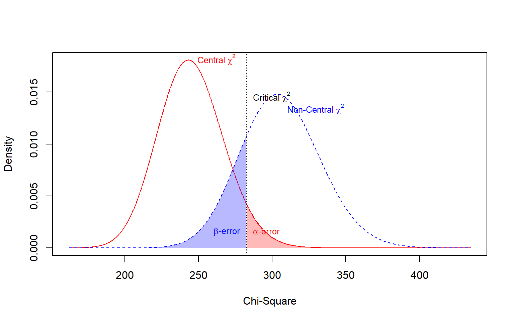
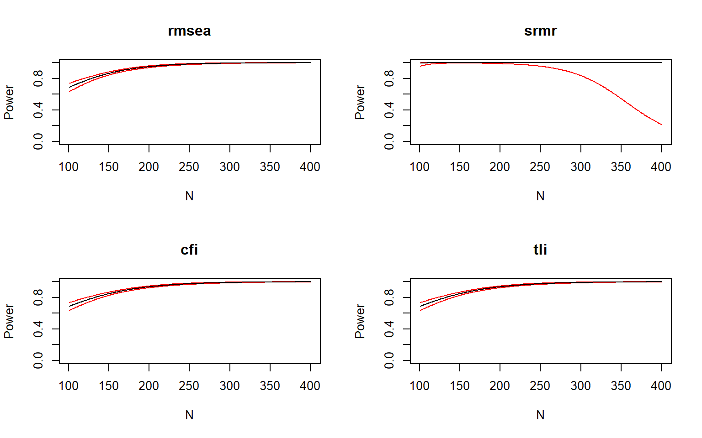
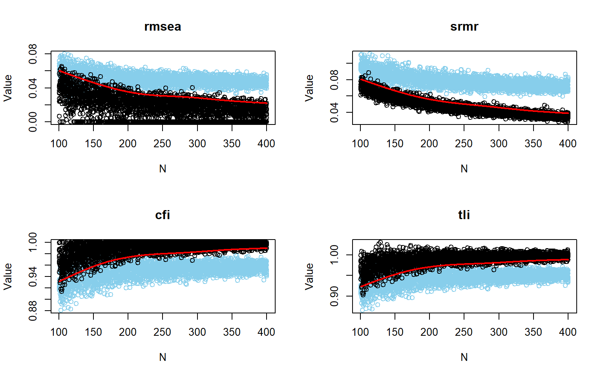
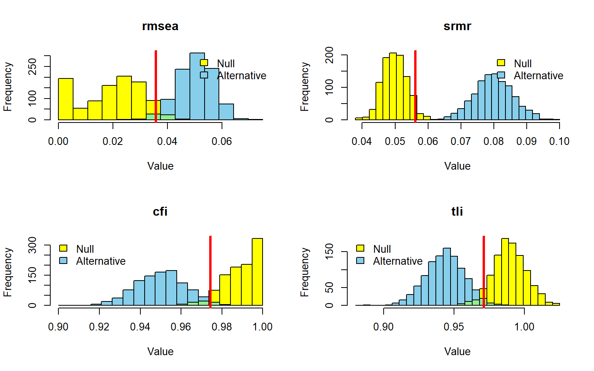
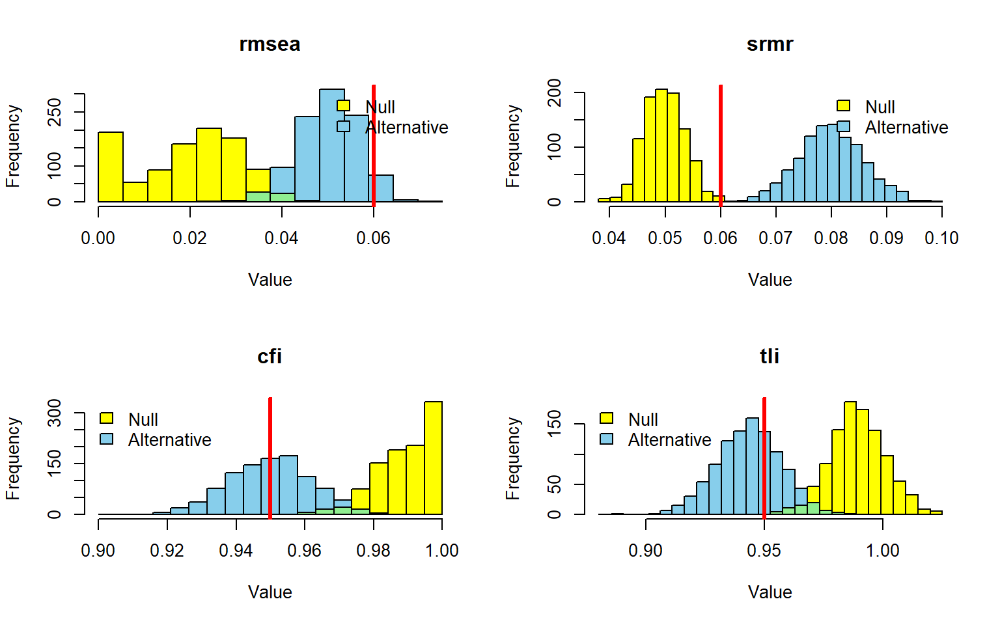

4 Análise de poder
O script models.R define os modelos populacionais e o modelo de análise. O script helpers.R carrega os pacotes e define os parâmetros compartilhados das análises, como o número de replicações, as sequências de tamanhos amostrais, as sementes, os critérios de decisão, a distribuição não normal e a proporção de dados ausentes.
Os scripts cache_utils.R e cache_loader.R reproduzem a a lógica de execução ou leitura das simulações adotadas. O script pre_render_cache.R garante a existência do carregador antes da renderização. As chamadas das funções analíticas e de simulação permanecem diretamente nesse arquivo.
Em muitas pesquisas empíricas, uma escala não constitui o desfecho final, mas o modelo de medida de construtos posteriormente relacionados em um modelo estrutural. O planejamento amostral deve, portanto, considerar o instrumento e a estrutura que se pretende estimar, em vez de depender de regras gerais sobre o número de itens ou parâmetros (Kline, 2023). Nesta seção, tratamos poder como a probabilidade de detectar uma omissão estrutural definida antes da coleta.
4.1 Pressupostos a priori
A análise de poder foi planejada a partir dos dois modelos de medida fundamentados na Capítulo 3. A segunda especificação do modelo não é tratada como um modelo concorrente a ser diretamente estimado e comparado com o primeiro. Em vez disso, representa uma condição populacional alternativa na qual o ajuste do modelo mais parcimonioso implica a omissão deliberada das três cargas cruzadas.
As cargas fatoriais principais, as correlações entre os fatores e as variâncias residuais foram definidas com base nas evidências meta-analíticas e nas revisões apresentadas anteriormente (Lin & Yao, 2022; Mosqueira Taipe et al., 2026; Skevington & Epton, 2018). Consequentemente, a análise de poder é conduzida a priori: as características da população e a magnitude da misspecificação são estabelecidas antes do acesso aos dados empíricos utilizados nas seções subsequentes.
Além da estrutura fatorial, as simulações incorporam duas condições frequentemente encontradas em aplicações reais da análise fatorial confirmatória: não normalidade e dados ausentes. A distribuição dos indicadores admite assimetrias entre \(-1\) e \(+1\) e valores de curtose entre aproximadamente 1,7 e 2,0, representando desvios moderados da normalidade compatíveis com resultados anteriores obtidos com o WHOQOL-Bref (Yoshitake et al., 2015).
Também se pressupõe que 10% das respostas estejam ausentes segundo um mecanismo completamente ao acaso. A adoção do mecanismo MCAR permite representar a perda de informação decorrente dos dados ausentes sem exigir a formulação adicional de um padrão prospectivo de ausência dependente de variáveis observadas. Em todas as condições, os modelos são estimados por máxima verossimilhança robusta, enquanto os dados ausentes são tratados por máxima verossimilhança com informação completa. A Tabela 4.1 sintetiza essas decisões.
| Componente | Especificação | Base |
|---|---|---|
| Modelo de referência | Quatro fatores correlacionados e covariância residual Q3–Q4 | Lin e Yao (2022) |
| Misspecificação | Omissão de três cargas cruzadas | Mosqueira-Taipe et al. (2026) |
| Não normalidade | Assimetria de -1 a +1; curtose entre 1,7 e 2,0 | Yoshitake et al. (2015) |
| Dados ausentes | 10% MCAR | Mosqueira-Taipe et al. (2026) |
| Estimação | MLR + FIML | Cenário realístico |
| Erro tipo I | 0.05 | Definido a priori |
| Poder-alvo | 0.80 | Definido a priori |
O objeto power_assumptions é uma tabela construída com a função tribble(), do pacote tibble. Cada linha traduz uma decisão metodológica da análise de poder em três campos: componente, especificação e fundamento. As variáveis ALPHA e POWER, definidas no script helpers.R, mantêm o nível de significância e o poder desejado sincronizados com as análises seguintes. A função kable(), do pacote knitr, apenas organiza esse objeto para apresentação em Tabela 4.1.
Após carregar os scripts indicados no início da seção, a tabela pode ser reproduzida com:
Código
power_assumptions <- tribble(
~component, ~specification, ~basis,
"Modelo de referência",
"Quatro fatores correlacionados e covariância residual Q3--Q4",
"Lin e Yao (2022)",
"Misspecificação",
"Omissão de três cargas cruzadas",
"Mosqueira-Taipe et al. (2026)",
"Não normalidade",
"Assimetria de -1 a +1; curtose entre 1,7 e 2,0",
"Yoshitake et al. (2015)",
"Dados ausentes", "10% MCAR", "Mosqueira-Taipe et al. (2026)",
"Estimação", "MLR + FIML", "Cenário realístico",
"Erro tipo I", format(ALPHA, nsmall = 2), "Definido a priori",
"Poder-alvo", format(POWER, nsmall = 2), "Definido a priori"
)
kable(
power_assumptions,
col.names = c("Componente", "Especificação", "Base"),
align = c("l", "l", "l")
)4.2 Abordagem analítica de poder
A primeira estimativa do tamanho amostral é obtida pelo método analítico baseado em modelos. Nessa análise, a estrutura populacional contém as três cargas cruzadas, enquanto o modelo submetido ao teste mantém apenas as cargas principais e a covariância residual entre Q3 e Q4. Assim, a magnitude do efeito não é definida por um valor convencional de RMSEA ou por outra regra geral, mas pela discrepância entre a matriz de covariâncias populacional e as restrições impostas pelo modelo de análise (Moshagen & Bader, 2024).
Como não é especificado um segundo modelo livremente estimado para uma comparação aninhada, o procedimento avalia o ajuste global do modelo de análise em relação ao modelo saturado. Portanto, a hipótese testada não corresponde à comparação direta entre o modelo parcimonioso e o modelo livre com cargas cruzadas. Ela expressa a capacidade de rejeitar globalmente o modelo que omite as relações presentes na população.
Considerando nível de significância de 5% e poder desejado de 80%, o método analítico indicou um tamanho amostral mínimo de 106 participantes. Esse valor é utilizado como ponto de partida para a etapa de simulação, e não como recomendação amostral definitiva.
A Figura 4.1 apresenta as distribuições central e não central do qui-quadrado. A distribuição sob a hipótese nula representa o comportamento esperado da estatística quando as restrições do modelo são adequadas, enquanto a distribuição não central representa o comportamento esperado diante da discrepância populacional especificada. A região de rejeição e a sobreposição entre as duas distribuições permitem visualizar conjuntamente o erro tipo I e o poder estatístico.
semPower: A priori power analysis
F0 0.578978
RMSEA 0.048612
SRMR 0.066543
Mc 0.748646
GFI 0.953973
AGFI 0.943640
CFI 0.959955
df 245
Required Num Observations 106
Critical Chi-Square 282.5114
NCP 60.79267
Alpha 0.050000
Beta 0.196821
Power (1 - Beta) 0.803179
Implied Alpha/Beta Ratio 0.254037
O objeto ap_h1model é criado pela função semPower.powerLav(), do pacote semPower. O argumento type = "a-priori" solicita o tamanho amostral necessário para alcançar o poder definido na variável POWER, considerando o nível de significância armazenado em ALPHA. O objeto h1model, definido no script models.R, representa a estrutura populacional com as três cargas cruzadas. O objeto analyzemodel representa o modelo de análise que omite essas relações.
O argumento lavOptions = list(std.lv = TRUE) identifica os fatores por meio de variâncias unitárias, enquanto p = P informa o número de indicadores observados. Por fim, a função summary() apresenta os resultados da análise e produz as distribuições representadas em Figura 4.1. Após carregar os scripts indicados no início da seção, a saída pode ser reproduzida com:
4.3 Simulação Monte Carlo
Embora a abordagem analítica forneça um ponto de partida objetivo, ela não representa integralmente as condições realísticas previstas na literatura. Por esse motivo, a etapa seguinte utiliza uma simulação Monte Carlo que combina não normalidade moderada e 10% de dados ausentes MCAR, mantendo a estimação por máxima verossimilhança robusta (MLR) com tratamento dos dados ausentes por informação completa (FIMLR).
Os tamanhos amostrais variam de 101 a 400 participantes. Em cada tamanho, são realizadas dez replicações sob duas condições populacionais. Na condição de referência, os dados seguem a estrutura de quatro fatores sem cargas cruzadas. Na condição alternativa, os dados são gerados com as três cargas cruzadas, mas analisados pelo modelo que as omite. A comparação entre essas condições permite estimar a capacidade de RMSEA, SRMR, CFI e TLI para identificar a misspecificação previamente definida.
Duas representações das relações entre tamanho amostral e poder são apresentadas. A primeira utiliza suavização logística para representar a tendência geral de crescimento do poder ao longo da faixa amostral (Figura 4.2). A segunda mostra diretamente as proporções de rejeição observadas nas replicações realizadas em cada tamanho (Figura 4.3).

Os objetos popmodel_varying e h1model_varying armazenam os resultados das duas simulações com tamanhos amostrais variáveis. A função cache_or_run(), definida em cache_utils.R, primeiro procura o objeto na sessão e o respectivo arquivo RDS em Data/IntermediateData. A função sim() somente é executada quando nenhum resultado previamente salvo está disponível.
Nas duas chamadas de sim(), o objeto analyzemodel especifica o modelo estimado. O argumento generate diferencia as condições: popmodel gera dados sem as cargas cruzadas e h1model gera dados com as três relações omitidas pelo modelo de análise. A variável SEQ fornece os tamanhos amostrais; P_MCAR define a proporção de dados ausentes; e dist contém os valores de assimetria e curtose. Os argumentos estimator = "mlr" e missing = "fiml" determinam, respectivamente, o estimador robusto e o tratamento dos dados ausentes.
A função plotPowerFit() compara os dois objetos simulados para os índices armazenados em FITS. Como o argumento logistic conserva seu valor padrão TRUE, as proporções empíricas de rejeição são representadas por curvas logísticas suavizadas. A simulação e a figura podem ser reproduzidas com:
Código
popmodel_varying <- cache_or_run("popmodel_101to400", {
sim(
NULL,
n = SEQ,
pmMCAR = P_MCAR,
analyzemodel,
generate = popmodel,
indDist = DIST,
std.lv = TRUE,
lavaanfun = "cfa",
estimator = "mlr",
missing = "fiml",
seed = SEED,
multicore = TRUE
)
})
h1model_varying <- cache_or_run("h1model_101to400", {
sim(
NULL,
n = SEQ,
pmMCAR = P_MCAR,
analyzemodel,
generate = h1model,
indDist = DIST,
std.lv = TRUE,
lavaanfun = "cfa",
estimator = "mlr",
missing = "fiml",
seed = SEED,
multicore = TRUE
)
})
plotPowerFit(
h1model_varying,
popmodel_varying,
alpha = ALPHA,
usedFit = FITS
)
A Figura 4.3 reutiliza os objetos h1model_varying e popmodel_varying explicados no callout anterior. A diferença está no argumento logistic = FALSE da função plotPowerFit(). Com essa opção, a função não ajusta curvas logísticas: ela conecta os valores de poder observados nas replicações de cada tamanho amostral. Essa representação permite verificar a variabilidade que a suavização da Figura 4.2 resume.
Após criar ou carregar os dois objetos simulados, a figura pode ser reproduzida com:
Código
plotPowerFit(
h1model_varying,
popmodel_varying,
alpha = ALPHA,
usedFit = FITS,
logistic = FALSE
)As curvas apresentadas em Figura 4.2 e Figura 4.3 sugerem que uma amostra próxima de 150 participantes pode ser suficiente para que os índices globais detectem a omissão das cargas cruzadas. O poder e os pontos de corte empíricos são, então, calculados especificamente para \(N=150\). Essa avaliação permite verificar se o tamanho indicado visualmente pelas curvas oferece desempenho consistente entre os quatro índices ou se permanece excessivamente próximo do limite adotado.
| RMSEA | SRMR | CFI | TLI | |
|---|---|---|---|---|
| Poder | 0.864 | 0.999 | 0.847 | 0.847 |
| Ponto de corte | 0.046 | 0.068 | 0.957 | 0.951 |
A função getPowerFit() calcula o poder empírico em \(N=150\). O objeto h1model_varying é informado como a condição alternativa, na qual as cargas cruzadas estão presentes na população, e o argumento nomeado nullObject recebe popmodel_varying, a condição em que o modelo está corretamente especificado. Os argumentos alpha, nVal e usedFit definem o nível de significância, o tamanho amostral examinado e os índices de ajuste avaliados.
A função getCutoff() usa a distribuição dos índices em popmodel_varying para obter os pontos de corte correspondentes ao mesmo nível de significância e tamanho amostral. Em seguida, rbind() reúne poder e pontos de corte no objeto power_cutoff_varying, e kable() apresenta esse objeto em Tabela 4.2. Após carregar as simulações, a tabela pode ser reproduzida com:
Código
power_varying <- getPowerFit(
h1model_varying,
nullObject = popmodel_varying,
alpha = ALPHA,
nVal = 150,
usedFit = FITS
)
cutoff_varying <- getCutoff(
popmodel_varying,
alpha = ALPHA,
nVal = 150,
usedFit = FITS
)
power_cutoff_varying <- rbind(
"Poder" = as.numeric(power_varying),
"Ponto de corte" = as.numeric(cutoff_varying[1, ])
)
colnames(power_cutoff_varying) <- toupper(names(power_varying))
kable(power_cutoff_varying, digits = 3, align = "c")Em \(N=150\), o poder estimado foi de 0.864 para o RMSEA, 0.999 para o SRMR, 0.847 para o CFI e 0.847 para o TLI.
Entretanto, essa primeira simulação examina somente a capacidade dos índices globais de ajuste para detectar a misspecificação. Ela não avalia recuperação das cargas fatoriais, viés absoluto ou relativo dos parâmetros, viés dos erros-padrão, cobertura dos intervalos de confiança ou poder de parâmetros individuais. Assim, uma amostra que pareça suficiente para o teste global não necessariamente garante precisão adequada para todos os parâmetros do modelo (Feng & Hancock, 2023; Pornprasertmanit et al., 2022).
4.4 SMC com tamanho amostral fixo
Diante da possibilidade de que 150 participantes representem uma solução limítrofe, adota-se \(N=200\) como tamanho amostral de planejamento. Essa decisão não constitui uma regra universal para análise fatorial confirmatória. Trata-se de uma escolha prudencial que considera, simultaneamente, os resultados das curvas de poder, a complexidade do modelo de medida, as condições não ideais de distribuição e missing e a ausência, neste tutorial, de uma avaliação completa da recuperação dos parâmetros.
A análise com tamanho amostral fixo utiliza 1.000 replicações para cada condição populacional. Na primeira, são gerados dados de acordo com o modelo de referência. Na segunda, os dados são gerados sob a estrutura que contém as três cargas cruzadas, mas continuam sendo analisados pelo modelo que as omite. Diferentemente da etapa anterior, na qual dez replicações foram distribuídas em cada um dos diversos tamanhos amostrais, esta etapa concentra todas as 1.000 replicações em \(N=200\). Isso permite obter estimativas mais estáveis do poder e das distribuições empíricas dos índices de ajuste nesse tamanho específico.
Como o tamanho amostral permanece constante, não é necessária uma suavização logística. A Figura 4.4 mostra diretamente o comportamento empírico dos índices nas duas condições populacionais. A separação entre as distribuições é a representação gráfica da capacidade de identificar a misspecificação.

Os objetos popmodel_fixed e h1model_fixed armazenam as simulações com tamanho amostral fixo. A variável SIM, definida em helpers.R, determina 1.000 replicações, e N_TARGET fixa 200 participantes em cada uma delas. Os demais argumentos de sim() preservam o mesmo cenário realístico da etapa anterior: 10% de dados ausentes MCAR, não normalidade moderada, estimação MLR e tratamento FIML.
A função cache_or_run() associa os dois objetos aos arquivos popmodel_200.rds e h1model_200.rds. Assim, a renderização utiliza os resultados já salvos quando eles estão disponíveis e executa sim() somente quando é necessário reproduzir as simulações. A função plotPowerFit() compara as distribuições dos índices de ajuste nas duas condições populacionais: a de referência e a que contém as cargas cruzadas. A simulação e a figura podem ser reproduzidas com:
Código
popmodel_fixed <- cache_or_run("popmodel_200", {
sim(
SIM,
n = N_TARGET,
pmMCAR = P_MCAR,
analyzemodel,
generate = popmodel,
indDist = DIST,
std.lv = TRUE,
lavaanfun = "cfa",
estimator = "mlr",
missing = "fiml",
seed = SEED,
multicore = TRUE
)
})
h1model_fixed <- cache_or_run("h1model_200", {
sim(
SIM,
n = N_TARGET,
pmMCAR = P_MCAR,
analyzemodel,
generate = h1model,
indDist = DIST,
std.lv = TRUE,
lavaanfun = "cfa",
estimator = "mlr",
missing = "fiml",
seed = SEED,
multicore = TRUE
)
})
plotPowerFit(
h1model_fixed,
popmodel_fixed,
alpha = ALPHA,
usedFit = FITS
)Em seguida, são calculados o poder de detecção da misspecificação e os pontos de corte correspondentes a RMSEA, SRMR, CFI e TLI. Esses pontos são derivados da distribuição dos índices quando o modelo está corretamente especificado, considerando simultaneamente o tamanho amostral, a não normalidade, o percentual de dados ausentes e o método de estimação. A Tabela 4.3 apresenta os resultados para \(N=200\).
| TRADITIONALCHI | RMSEA | SRMR | CFI | TLI | |
|---|---|---|---|---|---|
| Poder | 0.999 | 0.984 | 1.000 | 0.982 | 0.982 |
| Ponto de corte | 0.036 | 0.056 | 0.974 | 0.971 | 0.036 |
A função getPowerFit() calcula, a partir de h1model_fixed, o poder para rejeitar o modelo que omite as cargas cruzadas. O argumento nullObject = popmodel_fixed solicita que os critérios de decisão sejam derivados da distribuição dos índices quando o modelo está corretamente especificado. A seleção [FITS] conserva no objeto power_fixed somente RMSEA, SRMR, CFI e TLI, excluindo outras estatísticas retornadas pela função.
A função getCutoff() obtém os pontos de corte dos mesmos quatro índices em popmodel_fixed. Como todas as replicações possuem 200 participantes, não é necessário fornecer o argumento nVal. Os objetos power_fixed e cutoff_fixed são reunidos em power_cutoff_fixed, apresentado por kable() em Tabela 4.3. Após carregar as simulações, a tabela pode ser reproduzida com:
Código
power_fixed <- getPowerFit(
h1model_fixed,
nullObject = popmodel_fixed,
alpha = ALPHA,
usedFit = FITS
)
cutoff_fixed <- getCutoff(
popmodel_fixed,
alpha = ALPHA,
usedFit = FITS
)
power_cutoff_fixed <- rbind(
"Poder" = as.numeric(power_fixed),
"Ponto de corte" = as.numeric(cutoff_fixed[1, ])
)
colnames(power_cutoff_fixed) <- toupper(names(power_fixed))
kable(power_cutoff_fixed, digits = 3, align = "c")4.5 Comparação com pontos de corte tradicionais
Finalmente, o desempenho dos pontos de corte calibrados é comparado ao desempenho dos limites tradicionalmente utilizados para interpretar o ajuste global. Para RMSEA e SRMR, a rejeição ocorre quando os valores ultrapassam os respectivos limites; para CFI e TLI, ocorre quando os valores ficam abaixo deles.
A mesma simulação com tamanho amostral fixo é reavaliada, mantendo constantes o tamanho amostral, os modelos de geração e análise e todas as características dos dados. Apenas o critério de decisão é alterado. A Figura 4.5 apresenta a classificação obtida com os pontos de corte tradicionais, e a Tabela 4.4 apresenta o poder resultante.

A Figura 4.5 reutiliza os objetos h1model_fixed e popmodel_fixed; portanto, nenhuma nova simulação é executada. A única mudança em relação a Figura 4.4 é o argumento cutoff = RULE_OF_THUMB da função plotPowerFit(). O objeto RULE_OF_THUMB, definido em helpers.R, contém os limites tradicionais adotados para RMSEA, SRMR, CFI e TLI.
Como os dados simulados, os modelos, o tamanho amostral e o método de estimação permanecem constantes, as diferenças entre as duas figuras decorrem exclusivamente da substituição dos pontos de corte calibrados pelos limites tradicionais. Após carregar as simulações, a figura pode ser reproduzida com:
Código
plotPowerFit(
h1model_fixed,
popmodel_fixed,
cutoff = RULE_OF_THUMB,
alpha = ALPHA,
usedFit = FITS
)| CFI | TLI | RMSEA | SRMR | |
|---|---|---|---|---|
| Poder | 0.496 | 0.678 | 0.062 | 1 |
A função getPowerFit() calcula novamente o poder a partir do objeto h1model_fixed, mas agora o argumento nomeado cutoff recebe RULE_OF_THUMB. Diferentemente da análise em Tabela 4.3, não é fornecido um objeto de referência em nullObject, porque os critérios de decisão são informados diretamente.
O vetor retornado é transformado em uma tabela de uma linha por as.data.frame() e t(). Em seguida, os nomes dos índices são convertidos para maiúsculas e kable() apresenta o objeto power_traditional_tbl em Tabela 4.4. Após carregar a simulação com tamanho amostral fixo, a tabela pode ser reproduzida com:
Código
power_traditional <- getPowerFit(
h1model_fixed,
cutoff = RULE_OF_THUMB,
alpha = ALPHA,
usedFit = FITS
)
power_traditional_tbl <- t(as.data.frame(power_traditional))
colnames(power_traditional_tbl) <- toupper(names(power_traditional))
rownames(power_traditional_tbl) <- "Poder"
kable(power_traditional_tbl, digits = 3, align = "c")Com os pontos de corte tradicionais, o poder foi de 0.062 para o RMSEA, 1.000 para o SRMR, 0.496 para o CFI e 0.678 para o TLI.
Essa comparação permite verificar que os critérios tradicionais produzem conclusões completamente diferente às obtidas com as distribuições simuladas, com a sensibilidade para a misspecificação considerada considerávelmente distorcida (Groskurth et al., 2024; McNeish & Wolf, 2023).
Em conjunto, as três etapas cumprem funções complementares. A abordagem analítica oferece uma estimativa inicial baseada na discrepância populacional; a simulação com tamanho variável mostra como o poder evolui entre 101 e 400 participantes; e a simulação com 1.000 replicações em \(N=200\) fornece uma avaliação mais estável do planejamento amostral escolhido.